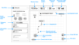
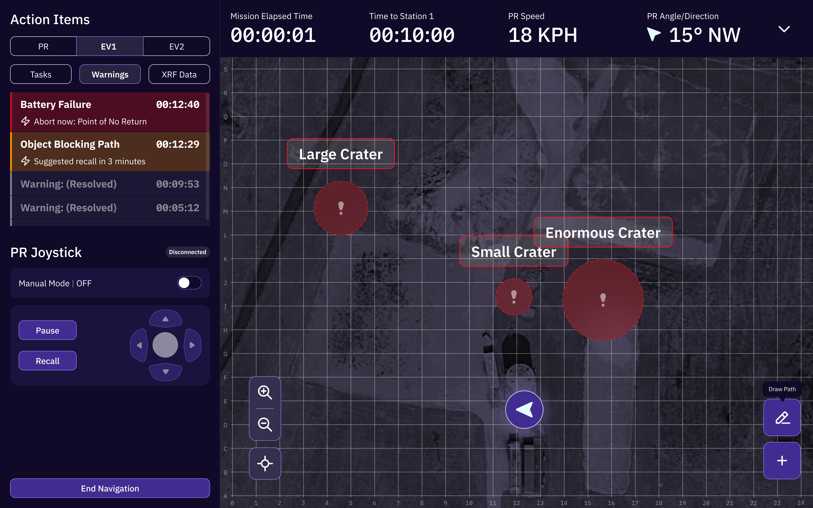
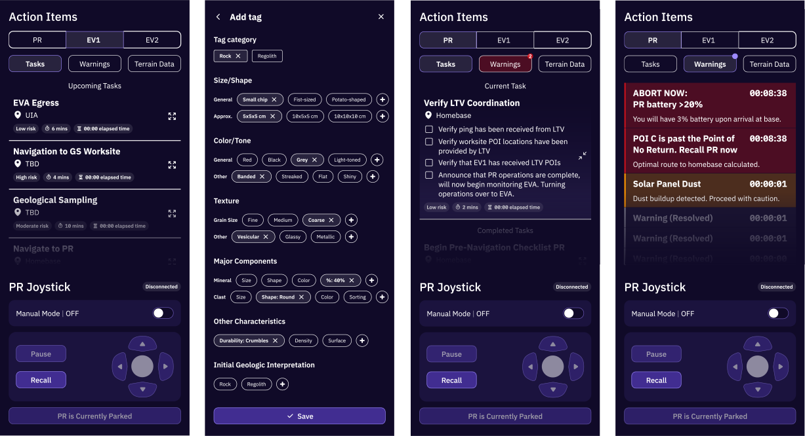
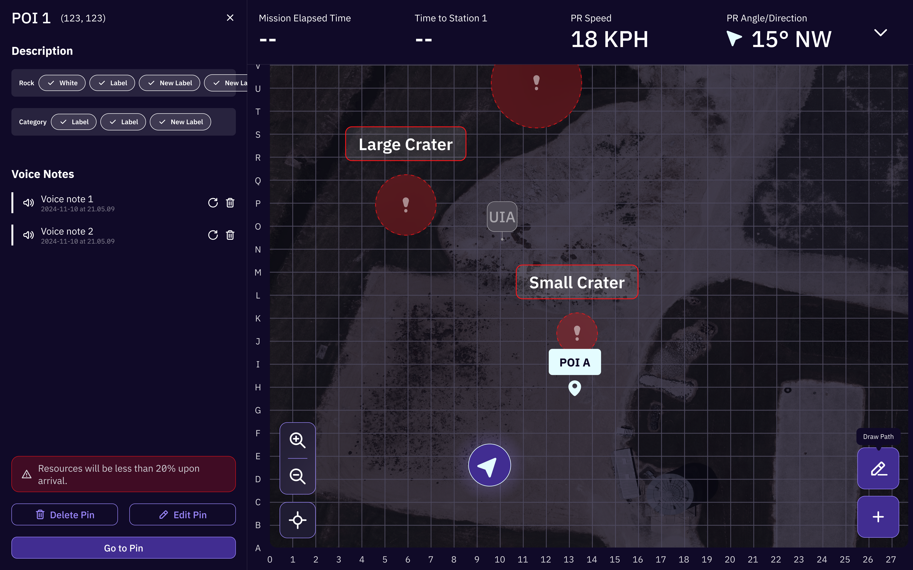
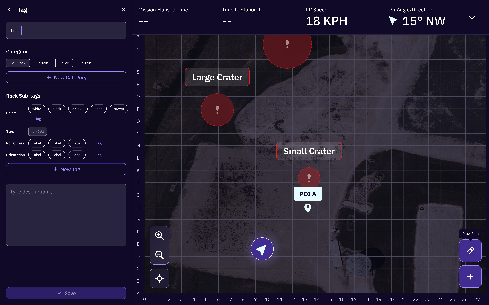
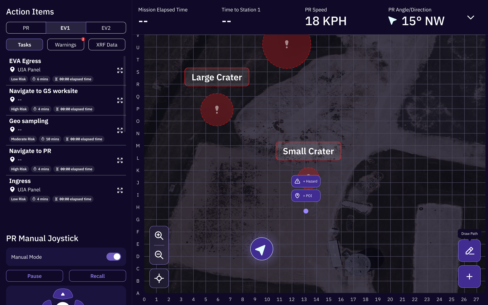

For the NASA S.U.I.T.S. (Spacesuit User Interface Technologies for Students) Competition, my role was dedicated to the new addition of AI automation within the S.U.I.T.S. interface systems. Some features included, a voice assistant, an alternate pathway calculation system, a log system of conversations with the voice assistant, and calculation to redirect the EV when telemetry shows low battery/warning.





